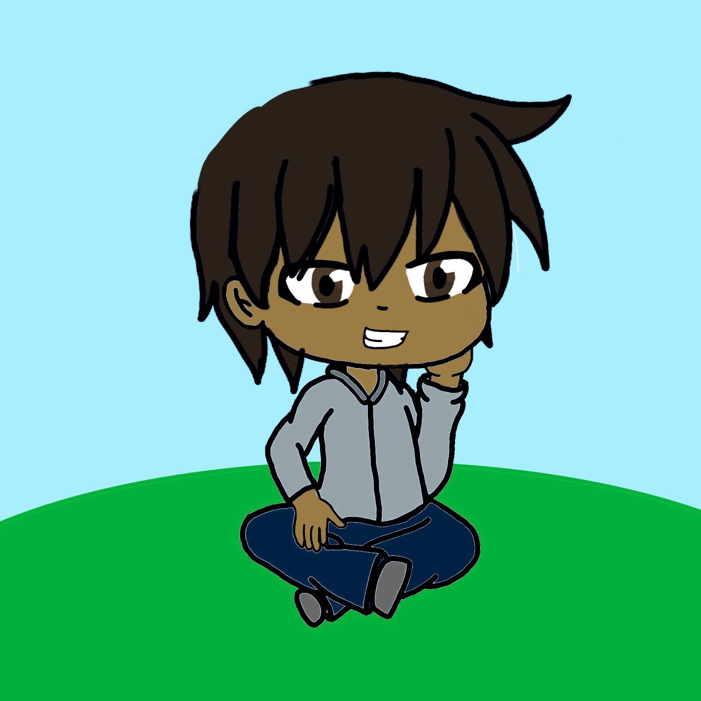
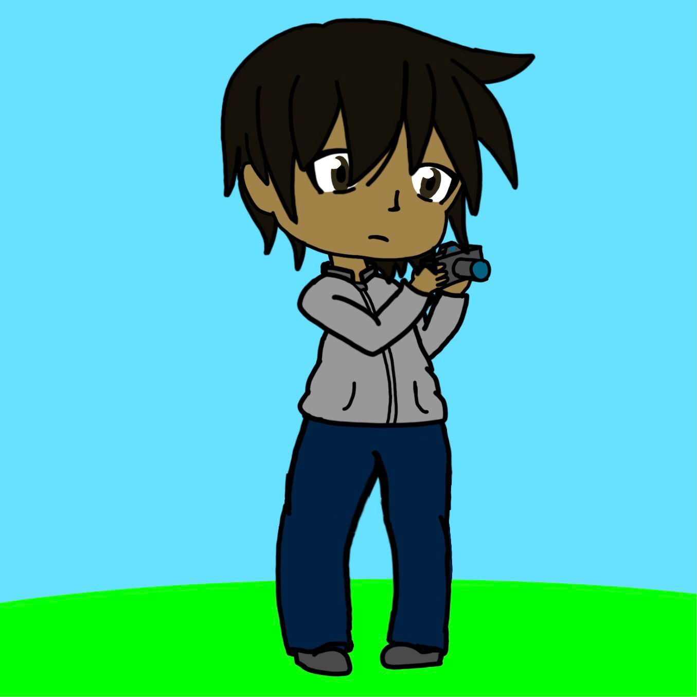
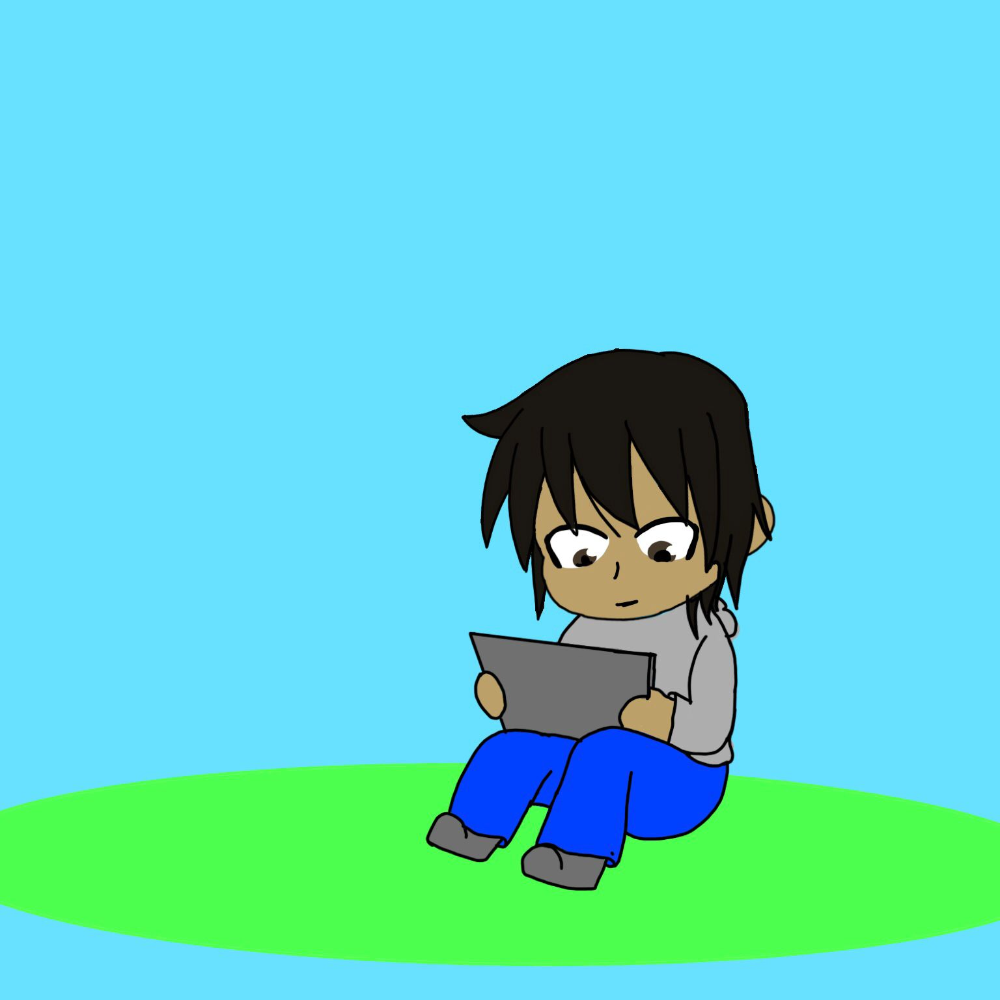
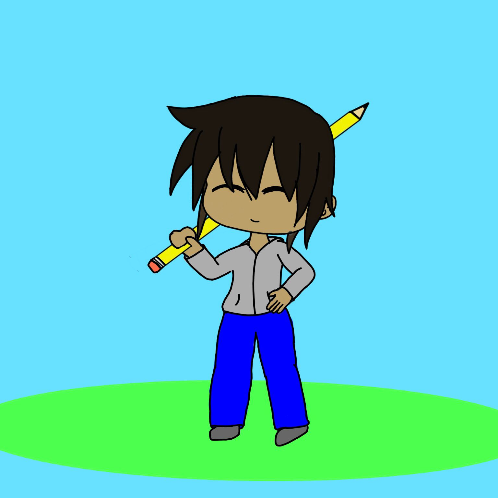
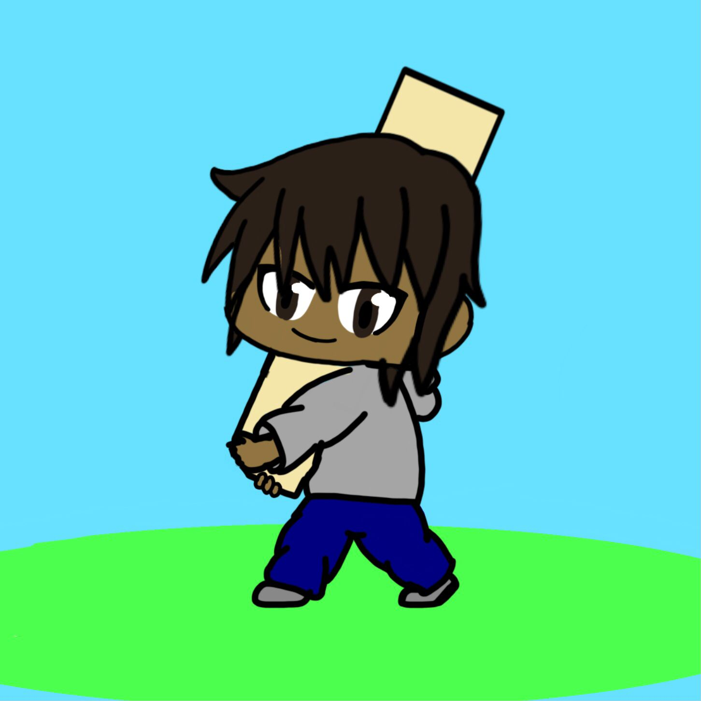

Un estudiante que esta cursando la universidad en su 5°semestre en la carrera de COMUNICACION MULTIMEDIA
y con la actividad de realizar un portafilio en digital con las cosas que hemos aprendido en este corto tiempo que llebamos.
En cada apartado se vera una breve explicacion de la habilidad y un ejemplo del mismo utilizando y poniendo a prueba el codigo que nos a enseñando.
Un estudiante que esta cursando la universidad en su 5°semestre en la carrera de COMUNICACION MULTIMEDIA
y con la actividad de realizar un portafilio en digital y en esta pagina web demuestro lo que se hacer de lo aprendido a lo largo de este corto tiempo.
Espero aprender muchas cosas más que me ayuden a mejorar y a mejorar lo aprendido
en el area que me especializo es en manualidades y diseño.

capacidad de capturar imágenes que pueden ser recuerdos y los puedes guardar para si queremos recordar el pasado o ocupar la imagen para algo.

Conocimiento basico en lo que es la edicion de imagenes digitales o de alguna fotografias en las ciales seria la modificacion par un arreglo de lo que se necesite.

realizar un dibujo en formato fisico y pasarlo a formato digital con diferentes formas de hacerlo
los formatos utilizados serian: Color, escala de grises, denialart, boceto.

tambien se hacer otras cosas que se trata del area de manualidades
el armado de figuras hechas de papel y entre otros materiales y conectando con actividades tranquilas que se ven en lo que es la creatividad